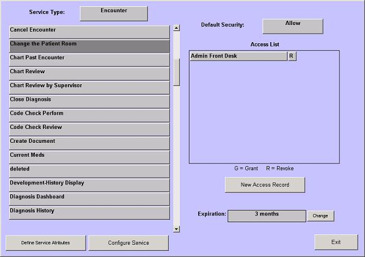

|
Description
The Authorize Services level of security allows ONLY the Super User or EHR Product Support to restrict or grant access to explicit EncounterPRO features on a user by user or role by role basis. There is a default security for each service that can be either:
- Allow -- allow all users to perform this service
- Don't allow -- allow only those users specifically granted access the ability to perform this task. Sensitive tasks, such as Configure Preferences, and Uncancel Encounter are defaulted to Don't Allow.
 NOTE: Users with the Special Permission of 'All privileges and access to all services' are considered Super Users and are always granted access to all services in the Authorize Services lists. You do not have to explicitly grant a Super User access to a service with 'Don't Allow' security. NOTE: Users with the Special Permission of 'All privileges and access to all services' are considered Super Users and are always granted access to all services in the Authorize Services lists. You do not have to explicitly grant a Super User access to a service with 'Don't Allow' security.
Service Types
The items on the Authorize Services list are at the most granular level. They are divided up by service type:
- General -- tasks that can be performed on data across the practice, such as Multiple Chart Export and all Configuration tasks
- Patient -- tasks that are performed on or for a patient, such as checking in the patient, entering current medications, viewing the patient's chart, etc.
- Encounter -- tasks that are performed during an encounter, such as changing the patient room, approving an encounter, canceling an encounter, etc.
- Assessment -- tasks that are specific to assessments, such as adding an attachment, rediagnosing, closing the diagnosis, etc.
- Treatment -- tasks that are specific to treatments, such as associating a treatment with a specific assessment, ordering treatments, refilling prescriptions, closing treatments, etc.
- Observation -- tasks that can be performed specific to an observation, such as adding a comment, sending a task related to this observation, etc.
- Attachment -- tasks that can be performed on attachments, such as creating a message or task related to this attachment, creating a document, etc.
How to Access This Screen
Access this screen by selecting Authorize Services from the Configuration list.
Screen Example

Related Solutions
Concept: EncounterPRO Security
Concept: Services
How to: Grant and Restrict User Access Using Authorize Services
|